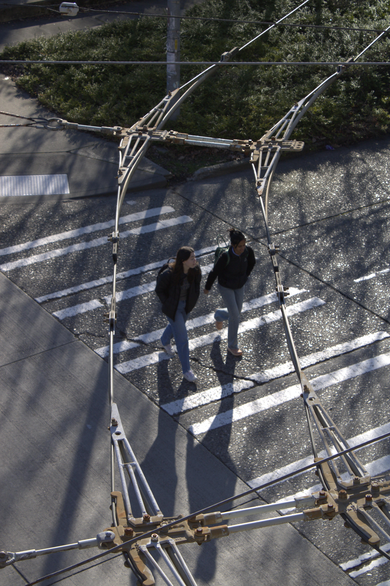
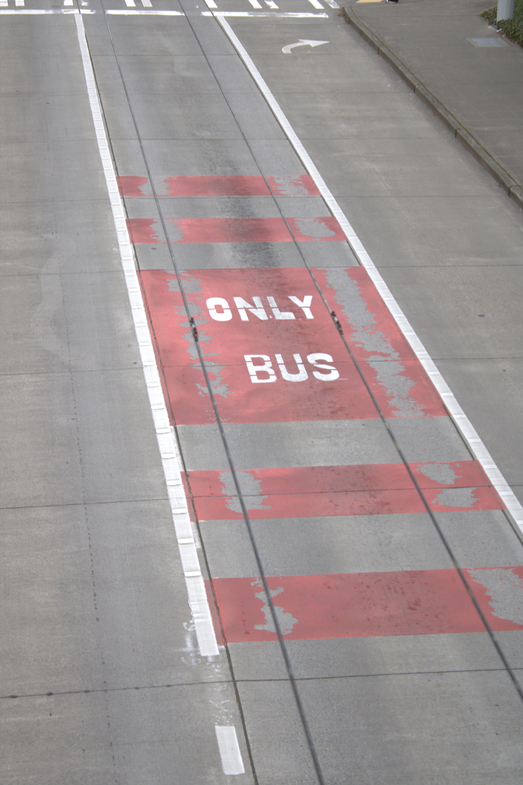
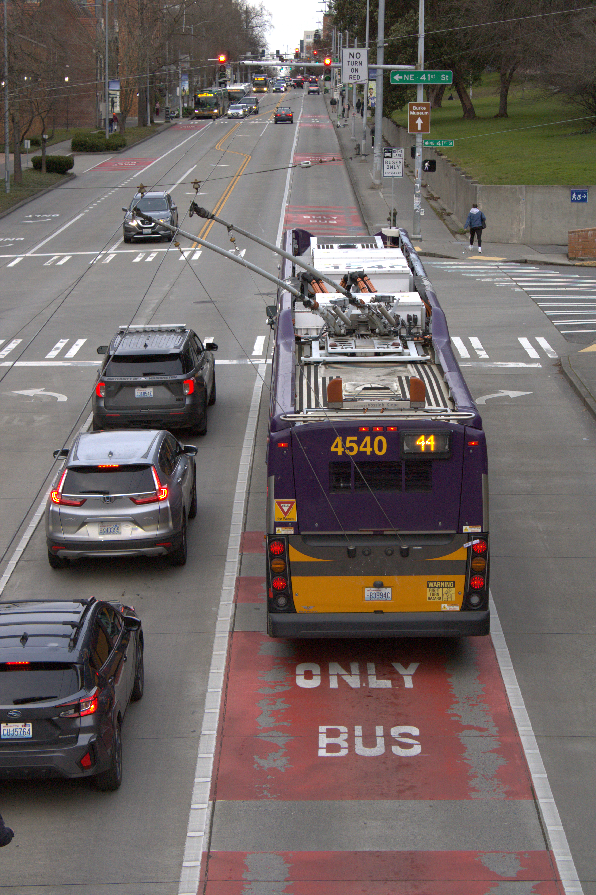
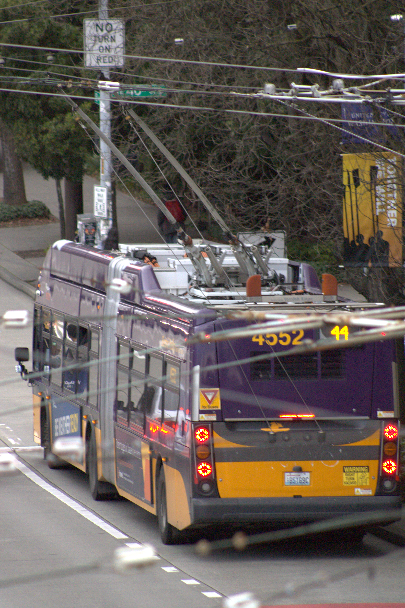
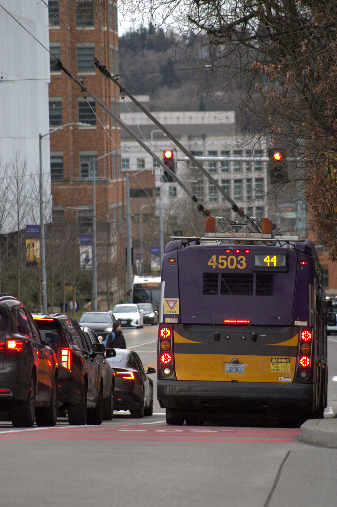
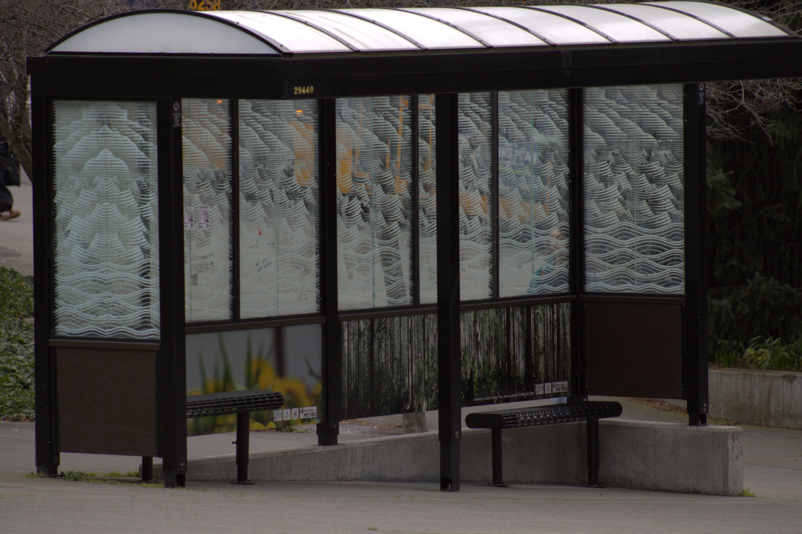
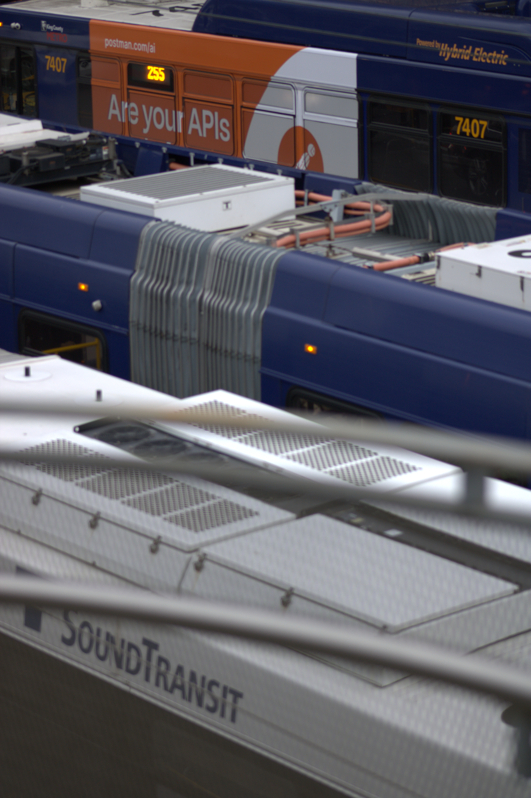
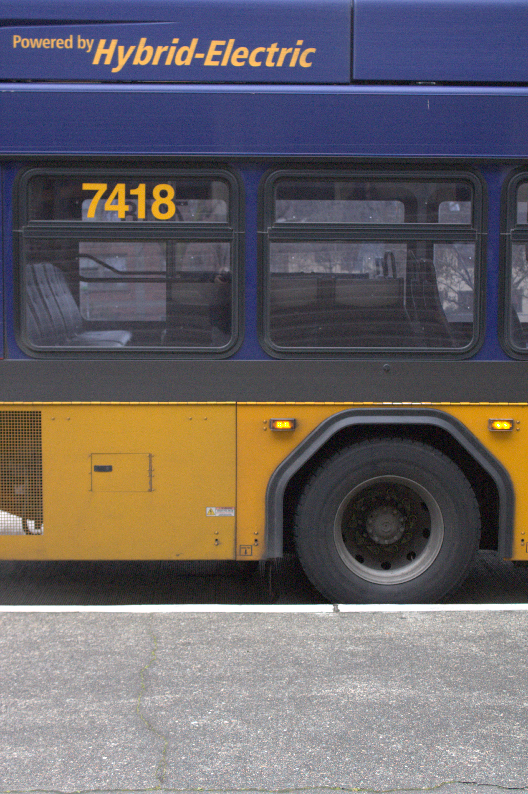

King County, Washington
A case for electrified transit.
Seattle's trolleybus network has hummed above its streets for decades — an invisible architecture of copper wire and overhead catenary that most riders never look up to see.
The infrastructure exists. The question is whether the will to expand it does too.


King County Metro's trolleybus fleet serves some of Seattle's densest corridors — running clean, running quiet — a preview of what the entire system could be.
King County Metro's vehicles range from decades-old diesel to cutting-edge electric. The difference isn't only environmental — it's sensory.



Every mile on wire is a mile without exhaust.


Link Light Rail corridors fully electrified by 2041
Electric Stride BRT rapid bus lines planned
Existing trolleybus routes operating on overhead wire today
Sound Transit's target year for network expansion completion
What does electrified transit feel like from the inside? Students at the University of Washington depend on these routes daily — for class, for work, for everything in between.
This film follows that ride — Husky card taps, bus arrival times, and the everyday choice to travel without a car.
Directed by Lola — King County Transit Project, 2025

King County's electric transit network is real, rideable, and ready to grow. Every trip on a trolleybus or Link train is a vote for the infrastructure we want to see more of.